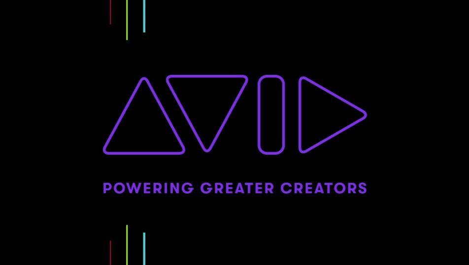

Mi trabajo soñado
Empresa
AVID
Avid Technology es una empresa estadounidense de soluciones para la creación, gestión y distribución de contenidos digitales no lineales. En 1989 presentó la edición digital no lineal con el sistema Avid Media Composer que revolucionó el proceso de postproducción. También es conocida en el mundo de la música por ser los desarrolladores del software DAW ProTools.
Departamento

I+D
Me gustaría trabajar en I+D, concretamente en tratamiento de señales de audio y vídeo: serialización y deserialización, etc.
El supervisor

El supervisor
Que sea un buen líder, que sepa lo que es programar y ser un subordinado y que no exija nada que no esté él mismo dispuesto a dar.
Beneficios

Beneficios
Seguro médico para mí y mi familia, Horario flexible.
Salario Neto mensual inicial
2.000€
Plan De Carrera
Plan de carrera
Comenzar como codificador, para ir subiendo a desarrollador junior, senior y acabar siendo arquitecto.
Modalidad
Telemática o híbrida.
Tareas

Tareas
Crear nuevas herramientas y soluciones para trabajar con señales de audio y MIDI de forma más óptima y cómoda, para facilitar el trabajo a los artistas que usen nuestras herramientas.
Plan de Formación
Plan de formación
Asistir a cursos acerca de nuevas herramientas que vayan surgiendo para estar actualizado con respecto a las nuevas tecnologías en el mercado.